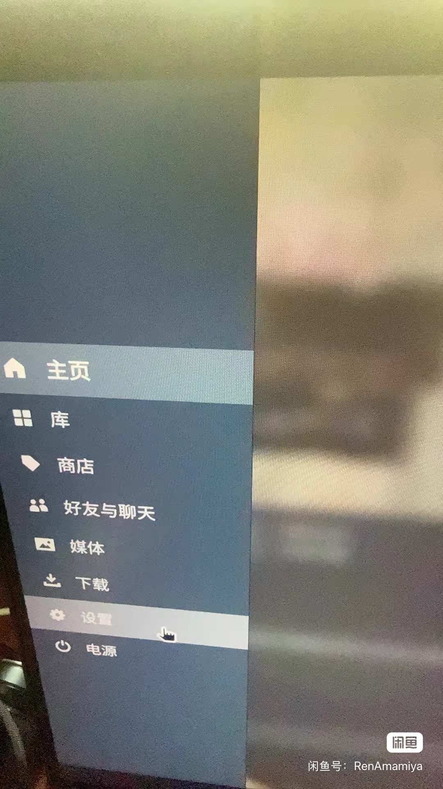
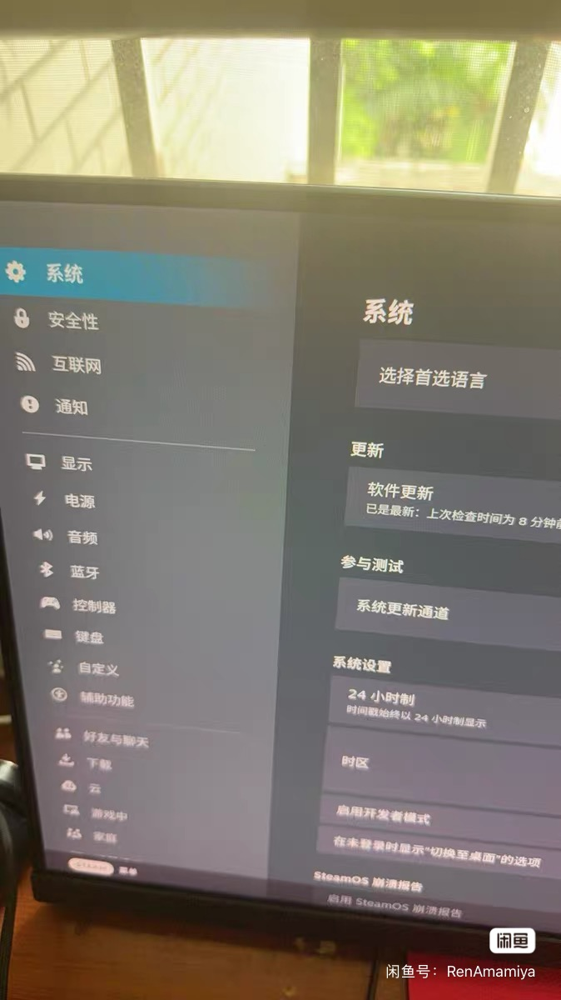
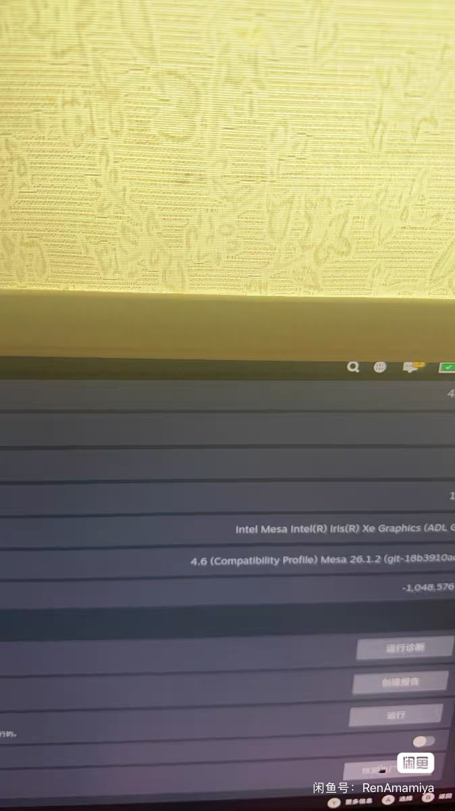

方法一
恢复出厂设置（无需键盘）
不知道怎样进入游戏模式？如果当前在桌面模式，双击桌面的“Return to Gaming Mode”图标即可返回游戏模式。
如果画面看起来像桌面模式，却看不到桌面图标或相关按键，可能只是 Steam 的大屏幕模式。按 Steam 键，选择“最小化 Steam”，回到真正的桌面后再双击该图标。
如果画面看起来像桌面模式，却看不到桌面图标或相关按键，可能只是 Steam 的大屏幕模式。按 Steam 键，选择“最小化 Steam”，回到真正的桌面后再双击该图标。
在游戏模式按 Steam 键，然后点击“设置”。

02
进入系统设置
在设置左侧选择“系统”。

03
恢复出厂设置
将右侧页面滑到最底部，点击“恢复出厂设置”，再按屏幕提示确认并等待设备完成重置。

保留数据重置密码
感谢 B 站 UP 主“灵翼”分享此方法与教程。该方法涉及启动菜单和命令操作，请严格按照原教程执行。
打开方法二教程 →